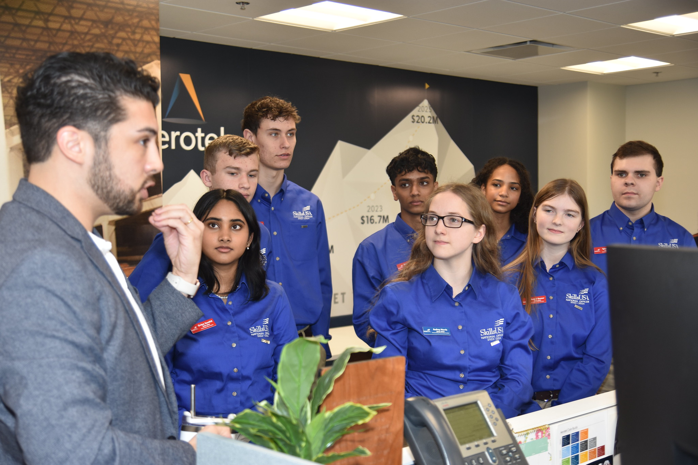

Aerotek
Networking and Advocacy
SkillsUSA week is an opportunity for our organization to take time to celebrate, engage, and look towards the future of how we can improve our organization. As National Officers we had the honor of meeting with some of our stake holders to not only learn more about their company infrastructure but to engage in meaningful disscusion to help guide how our partnership can best help students.
As a team we planned out our visit to Aerotek, one of our partners and prepared how we would answer and ask engaging questions. We used a meeting structure to determined the strengths of our team and who would be responsible for what parts of the meeting. The parts: Meeting Opener, Meeting Messenger, Meeting Closer and Meeting Reviewer all had essential tasks in our group and we needed to work together to acomplish our goals. I was selected as the Meeting Opener which meant my goal during the meeting was to create introductions, give a greeting and help transition into our meeting messengers. As with all the roles we had to be very ready to adapt and change our plans.
While working with my team I found that my jobs main challenge was that it took a lot of adapting to pull off. They had a full in depth schedule and it had been different than the one we had been given and because of that the way the meeting would begin did not mesh well with the meeting opener role. Unlike what we had planned we never had a true dedicated time that was ours to present so we had to find a way to adjust. Eventually they turned the presentation around to us to as questions which gave me an opening so I skipped introductions and many of our primary greeting messages as we had already done that as a team many times prior. I instead focused on opening the floor to my team to share their perspectives.
I believe this helped give me a realistic look at what opening a meeting can feel like especially when your schedule doesn't reflect what actually happens. I believe it will help me have better composure in the future and create a better pathway for my team in meetings going forward.
Essential Elements Learned
- Adaptability
- Professional Development
Additional Resources
